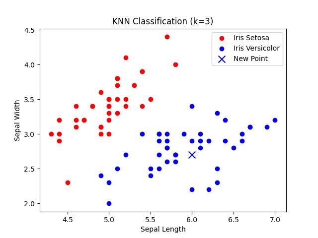

Implementing K-Nearest Neighbors (KNN) from Scratch Using the Iris Dataset
Overview
In this post, I’ll demonstrate how to implement the K-Nearest Neighbors (KNN) algorithm from scratch in Python. We will apply the algorithm to the Iris dataset, visualize the classification results, and include images of the predicted Iris flower types.
The Iris Dataset
The Iris dataset consists of measurements from three types of Iris flowers: Setosa, Versicolor, and Virginica. For this demonstration, we’ll focus on Iris Setosa and Iris Versicolor.
Replicating the KNN Algorithm
Here’s a brief overview of the KNN algorithm implemented from scratch:
import numpy as np
from collections import Counter
def distance(x, y):
return np.linalg.norm(x - y)
def scan_sorroundings(dataset, x, k):
distances = []
for point in dataset:
coord, label = point[0], point[1]
dist = distance(x, coord)
distances.append((dist, label))
distances.sort(key=lambda pair: pair[0])
return [label for _, label in distances[:k]]
def classify_new_point(dataset, x, k):
neighbors = scan_sorroundings(dataset, x, k)
most_common_label = Counter(neighbors).most_common(1)[0][0]
return most_common_labelTesting on the Iris Dataset
We applied the KNN algorithm to the Iris dataset, focusing on two classes: Iris Setosa and Iris Versicolor. Here’s the code for loading the dataset and classifying a new point:
from sklearn.datasets import load_iris
from sklearn.model_selection import train_test_split
iris = load_iris()
data = iris['data']
labels = iris['target']
binary_data = data[labels != 2][:, :2]
binary_labels = labels[labels != 2]
train_data, test_data, train_labels, test_labels = train_test_split(binary_data, binary_labels, test_size=0.2, random_state=42)
train_dataset = [(train_data[i], train_labels[i]) for i in range(len(train_data))]
test_point = test_data[0]
k = 3
assigned_label = classify_new_point(train_dataset, test_point, k)Visualizing the Results
The following code visualizes the dataset and includes an image of the predicted flower type:
import matplotlib.pyplot as plt
import matplotlib.image as mpimg
def plot_knn_result_with_image(dataset, x, k, assigned_label):
A_points = np.array([point[0] for point in dataset if point[1] == 0])
B_points = np.array([point[0] for point in dataset if point[1] == 1])
plt.scatter(A_points[:, 0], A_points[:, 1], color='red', label='Iris Setosa')
plt.scatter(B_points[:, 0], B_points[:, 1], color='blue', label='Iris Versicolor')
if assigned_label == 0:
plt.scatter(x[0], x[1], color='red', marker='x', s=100)
image_path = 'iris_setosa.jpg'
else:
plt.scatter(x[0], x[1], color='blue', marker='x', s=100)
image_path = 'iris_versicolor.jpg'
plt.legend()
plt.xlabel('Sepal Length')
plt.ylabel('Sepal Width')
plt.title(f'KNN Classification (k={k})')
plt.show()
img = mpimg.imread(image_path)
plt.imshow(img)
plt.axis('off')
plt.title(f'Predicted Flower: {"Iris Setosa" if assigned_label == 0 else "Iris Versicolor"}')
plt.show()
plot_knn_result_with_image(train_dataset, test_point, k, assigned_label)Plot of a classification result

The two species of iris classified


Photo of Iris Versicolor (Blue flag flower) by Danielle Langlois, taken in July 2005 at Forillon National Park, Quebec, Canada. License: CC BY-SA 3.0. File.
{kind=link}
Photo of Iris Setosa by Radomil. License: GNU Free Documentation License, Version 1.2 or later.
{kind=link}
Credits
K-Nearest Neighbors Algorithm:
This implementation was adapted from the tutorial provided by Jason Brownlee, “Tutorial to Implement k-Nearest Neighbors in Python from Scratch.”
Source: Machine Learning MasteryIris Dataset:
The dataset used in this post is the famous Iris dataset. It is available through the Scikit-learn library.Visualizations:
Visualizations were created using the Matplotlib library.